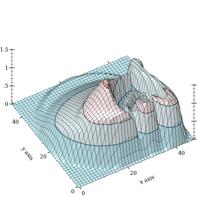
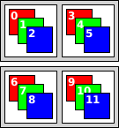

4.1 Overview
4.1.1 Motivation
Precision. A point in a typical bitmap is represented by a few bytes, each of which can have one of 256 distinct values. In contrast, a point in a flomap is represented by double-precision floating-point numbers, typically between 0.0 and 1.0 inclusive. This range contains about 4.6 quintillion (or 4.6×1018) distinct values. While bytes are fine for many applications, their low precision becomes a problem when images are repeatedly operated on, or when their values are built by adding many small amounts—
which are often rounded to zero. Range. A floating-point value can also represent about 4.6 quintillion distinct intensities above saturation (1.0). If distinguishing oversaturated values is important, flomaps have the range for it. Further, floating-point images are closed under pointwise arithmetic (up to floating-point error).
Speed. The images/flomap module benefits greatly from Typed Racket’s type-directed optimizations. Even getting individual color values—
interpolated between points, if desired— is fast.
4.1.2 Conceptual Model
A flomap is conceptually infinite in its width and height, but has nonzero values in a finite rectangle starting at coordinate 0 0 and extending to its width and height (exclusive). A flomap is not conceptually infinite in its components because there is no natural linear order on component coordinates, as the meaning of components depends on programmer intent.
> (define magenta-fm (make-flomap* 10 10 #(0.5 0.0 1.0)))
> (flomap->bitmap magenta-fm) > (flomap-ref* magenta-fm 0 0) (flvector 0.5 0.0 1.0)
> (flomap-ref* magenta-fm -1 0) (flvector 0.0 0.0 0.0)
> (flomap-ref* magenta-fm 0 1000) (flvector 0.0 0.0 0.0)
> (flomap-ref magenta-fm 3 0 0) flomap-ref: expected argument of type <nonnegative fixnum <
3>; given: 3
Many flomap functions, such as flomap-bilinear-ref and flomap-rotate, treat their arguments as if every real x y coordinate has values. In all such cases, known values are at half-integer coordinates and others are interpolated.
Examples: | ||||||||
|
> (require images/icons/misc plot)
> (define icon-fm (bomb-flomap #:bomb-color "orange" #:height 48))
> (flomap->bitmap icon-fm) > (define-values (icon-width icon-height) (flomap-size icon-fm))
> (plot3d-bitmap (contour-intervals3d (λ (x y) (flomap-bilinear-ref icon-fm 1 x y)) -0.5 (+ 0.5 icon-width) -0.5 (+ 0.5 icon-height))) 
If we have a w×h flomap and consider its known values as being at half-integer coordinates, the exact center of the flomap is at (* 1/2 w) (* 1/2 h). When unknown values are estimated using bilinear interpolation, the finite rectangle containing all the known and estimated nonzero values is from -1/2 -1/2 to (+ w 1/2) (+ h 1/2).
4.1.3 Opacity (Alpha Components)
A partially transparent flomap is simply a flomap in which component 0 is assumed to be an alpha (opacity) component. The other components should be multiplied by their corresponding alpha value; i.e. an RGB triple 1.0 0.5 0.25 with opacity 0.5 should be represented by 0.5 0.5 0.25 0.125.
This representation generally goes by the unfortunate misnomer “premultiplied alpha,” which makes it seem as if the alpha component is multiplied by something. We will refer to this representation as alpha-multiplied because the color components are multiplied by the alpha component. All alpha-aware functions consume alpha-multiplied flomaps and produce alpha-multiplied flomaps.
Compositing requires fewer operations per point.
Compositing is associative; i.e. (flomap-lt-superimpose fm1 (flomap-lt-superimpose fm2 fm3)) is the same as (flomap-lt-superimpose (flomap-lt-superimpose fm1 fm2) fm3), up to floating-point error.
There is only one transparent point: all zeros. We could not conceptualize partially transparent flomaps as being infinite in size without a unique transparent point.
Many functions can operate on flomaps without treating the alpha component specially and still be correct.
> (define circle-fm (draw-flomap (λ (fm-dc) (send fm-dc set-pen "black" 1 'transparent) (send fm-dc set-brush "green" 'solid) (send fm-dc draw-ellipse 10 10 30 30)) 50 50))
> (flomap->bitmap circle-fm) > (flomap->bitmap (flomap-blur circle-fm 4 4))
> (let* ([fm (flomap-divide-alpha circle-fm)] [fm (flomap-blur fm 4 4)] [fm (flomap-multiply-alpha fm)]) (flomap->bitmap fm))
Of course, this could be fixed by making flomap-blur operate differently on flomaps with an alpha component. But the implementation would amount to converting them to alpha-multiplied flomaps anyway.
The only valid reason to not multiply color components by alpha is loss of precision, which is not an issue with flomaps.
4.1.4 Data Layout
For most applications, there should be enough flomap functions available that you should not need to access their fields directly. However, there will always be use cases for direct manipulation, so the fields are public.
The color values in a flomap are stored flattened in a single FlVector, in row-major order with adjacent color components. For example, a 2×2 RGB flomap can be visualized as

In a flomap, it would be stored as
If i is a calculated index for the value at k x y, then the (+ k 1)th value is at index (+ i 1), the (+ x 1)th value is at index (+ i c), and the (+ y 1)th value is at index (+ i (* c w)).